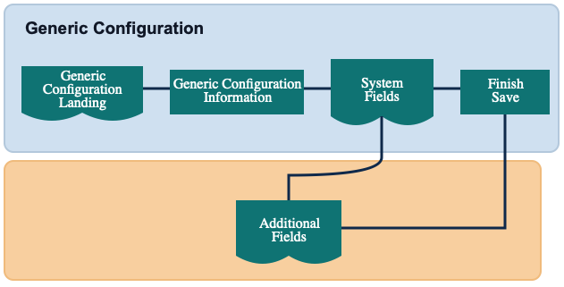

The Generic Configuration defines reusable configuration record types and controls how detail records are structured. This setup allows you to define field names, field types, lookup behavior, and required flags for both system-defined and user-defined values.

The selection screen lists existing Generic Configuration records with Record Type, Description, and System Created status.
Use filtering and sorting to find existing records quickly.
Select Add New to create a new record type.
Select Edit to update an existing record.
Select Delete to remove a record. System-created records are protected and cannot be deleted.
Define the base information for the record.
Record Type - Unique identifier for the generic configuration. This value is required and validated for uniqueness.
Description - Optional business-friendly description of the record type.
System Created - Read-only indicator that identifies system-delivered records.
Use Continue to move to field definition, or Save to save and return to the list.
Configure up to five system-defined fields (Field 1 to Field 5).
Each field supports Field Name, Field Type, Lookup Value, and Required.
Fields are progressive: each next field is enabled only after the previous field has both name and type.
If a prior field is cleared, downstream fields are reset to maintain sequence integrity.
For system-created records, system fields are read-only.
Select Continue to open additional fields, or Save to save and return to the list.
Configure up to eight user-defined fields (Field 1 to Field 8).
Each field supports Field Name, Field Type, Lookup Value, and Required.
Additional fields also follow progressive enablement and automatic reset behavior when earlier fields are removed.
Select Finish to save the configuration and return to the record list.
If a system-created record has no system fields configured, the flow can skip directly from Information to Additional Fields.